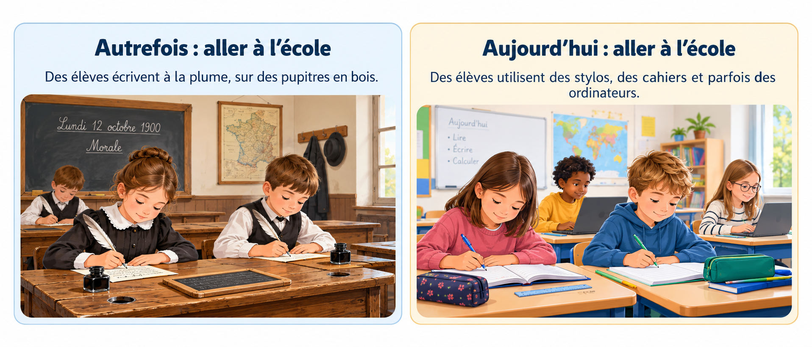
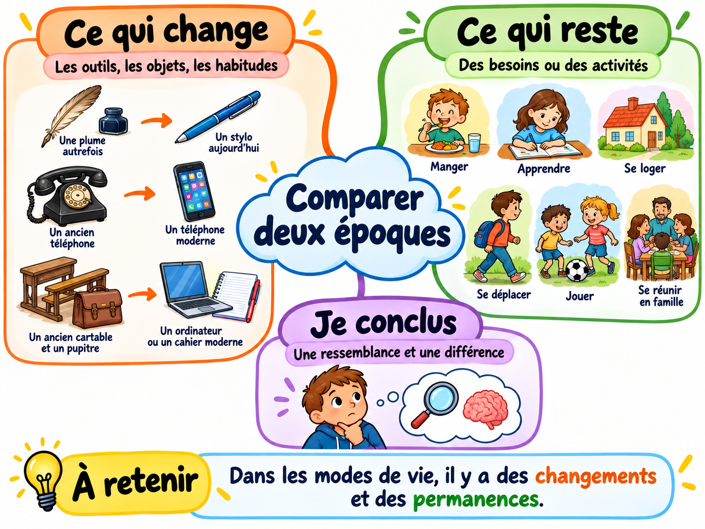

1. Je regarde
J’observe les images ou les documents avec attention.
Comparer autrefois et aujourd’hui
Quand on compare deux époques, on peut observer ce qui a changé… et ce qui existe encore aujourd’hui.

Qu’est-ce qui a changé entre l’école d’autrefois et l’école d’aujourd’hui ? Qu’est-ce qui reste ?
Pour comparer deux époques, j’observe les outils, les objets, les habitudes et les activités. Ensuite, je cherche une ressemblance et une différence.
J’observe les images ou les documents avec attention.
Je cherche ce qui change et ce qui reste pareil.
Je donne une ressemblance et une différence entre les deux époques.
